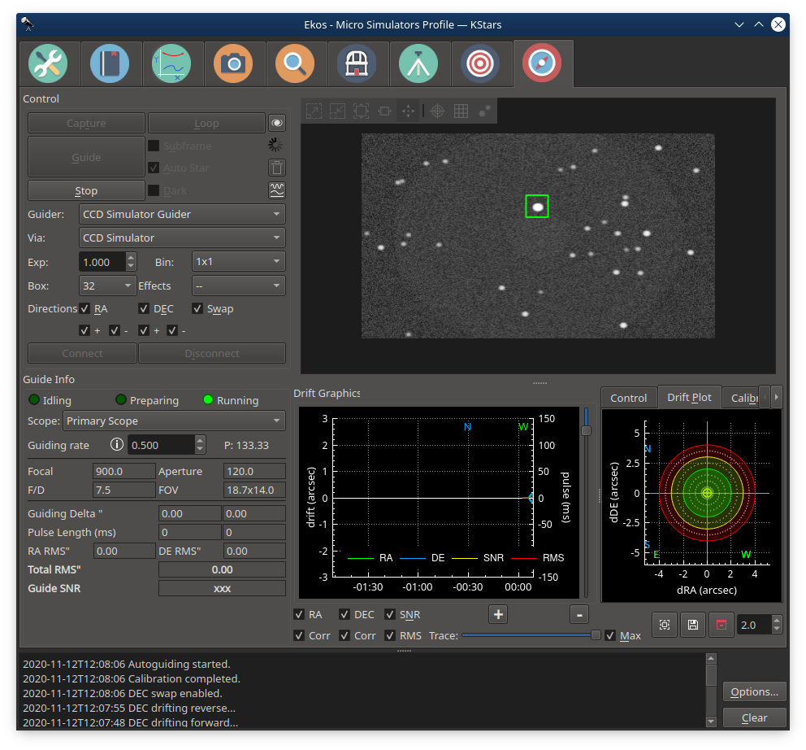
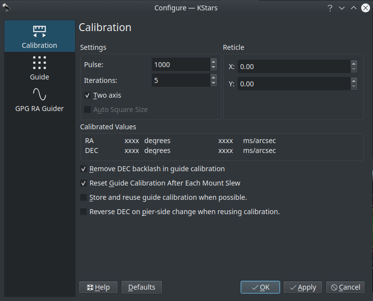
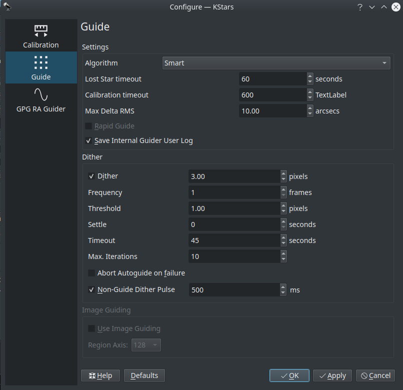
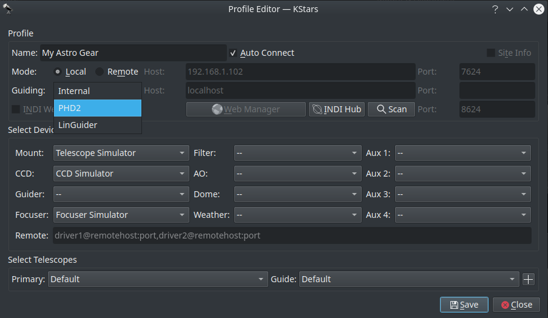
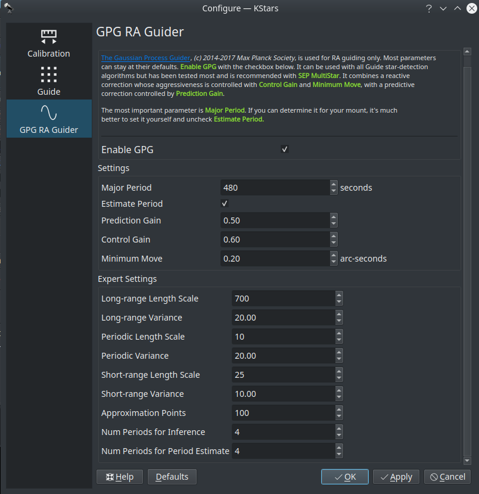
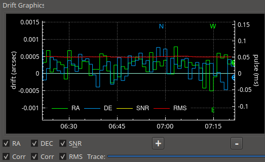
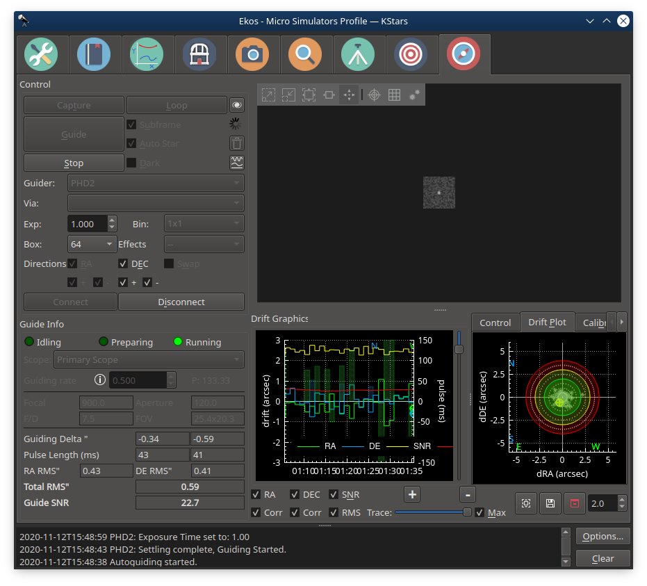

Guide

Introduction
Ekos Guide Module enables autoguiding capability using either the powerful built-in guider, or at your option, external guiding via PHD2 or lin_guider. Using the internal guiding, guider CCD frames are captured and sent to Ekos for analysis. Depending on the deviations of the guide star from its lock position, guiding pulses corrections are sent to your mount Via any device that supports ST4 ports. Alternatively, you may send the corrections to your mount directly, if supported by the mount driver. Most of the GUI options in the Guide Module are well documented so just hover your mouse over an item and a tooltip will popup with helpful information.
To perform guiding, you need to select a Guider CCD in Ekos Profile Setup. The telescope aperture and focal length must be set in the telescope driver. If the Guider CCD is attached to a separate Guide Scope, you must also set the Guide Scope's Focal Length and Aperture. You can set these values under the Options tab of the telescope driver or from the Mount module. Autoguiding is a two-step process: Calibration & Guiding.
Guiding introduction
During the two processes, you must set the following:
- Guider: Select the Guider CCD.
- Via: Selects which device receives the autoguiding correction pulses from Ekos. Usually, guider CCDs have an ST4 port. If you are using the guider's ST4 to autoguide your telescope, set the guider driver in the Via combo box. The guider CCD will receive the correction pulses from Ekos and will relay them to the mount via the ST4 port. Alternatively, some telescopes support pulse commands and you can select the telescope to be a receiver of the Ekos correction pulses.
- Exposure: CCD Exposure in seconds.
- Binning: CCD Binning.
- Box: Size of the box enclosing the guide star. Select a suitable size that is neither too large or too small for the selected star.
- Effects: Specify filter to be applied to the image to enhance it.
Main Module Controls
Most of the main module controls are briefly explained in this section.
- Capture: Takes one capture
- Guide: Starts the guiding process
- Stop: Stops the guiding process
- Loop: Starts taking frames every n seconds (n = exposure value)
- Subframe: Subframe the image around the guide star. Or for PHD2, receive the Guide Star Image instead of the full image frame. For the Internal Guider, before checking this option, you must first capture an image and select a guide star. Uncheck it to take a full frame again.
- Auto Star: If checked, Ekos will attempt to select the best guide star in the frame and begins the calibration process automatically.
- Dark: Subtract dark frame. If no dark frame is available, a new dark frame shall be captured and saved for future use.
- Show in FITS Viewer: Shows frame in FITS Viewer
- Clear calibration data: Clears all the calibration data for the guiding process.
- Manual Dither: Allows manual dithering.
- Guider: Select active guide camera.
- Via: Select which device receives the guiding correction commands.
- Exp: Exposure time in seconds.
- Bin: Guide camera binning. It is recommended to set binning to 2x2 or higher.
- Box: Guide star tracking box size. Box size must be set in accordance to the selected star size.
- Effects: Apply filter to image after capture to enhance it.
- Directions: Shows the values of RA and DEC.
- RA: Guide Right Ascention Axis
- +: East Direction Guiding
- -: West Direction Guiding
- DEC: Guide Declination Axis
- +: North Direction Guiding
- -: South Direction Guiding
- Swap: Swap DEC direction pulses. This value is determined automatically from the calibration procedure, only override if necessary.
- Connect: Connect to external guiding application.
- Disconnect: Disconnect from external guiding application.
- Status Bar: Displays the status of the guiding process
- Scope: Select which telescope to use when performing Field of View calculations.
- Guiding rate: Mount guiding rate (x15"/sec). Find out the guiding rate used by your mount and update the value here to get the recommended value of proportional gain suitable for your mount. Setting this value does not change your mount guiding rate.
- P: Recommended proportional rate given the selected guiding rate.
- Focal Length: Guide camera focal length. Unit is in millimeters (mm)
- Aperture: Guide camera aperture. Unit is in millimeters (mm)
- F/D: Focal ratio
- FOV: Field of view (arcmin)
- Guiding Delta ": Immediate Guiding RA deviation in arcseconds and Immediate Guiding DEC deviation in arcseconds respectively.
- Pulse Length (ms): Generated RA pulse and Generated DEC pulse respectively.
- RA RMS": RA Guiding RMS error.
- DE RMS": DEC Guiding RMS error.
- Total RMS": Total Guiding RMS error.
- Guide SNR: Guide Signal-to-noise ratio.
Dark Frames
Dark frames are immensely helpful in reducing noises in your guide frames. It is highly recommended to take dark frames before you begin and calibration or guiding procedure. To take a dark frame, check the Dark checkbox and then click Capture. For the first time this is performed, Ekos will ask you about your camera shutter. If your camera does not have a shutter, then Ekos will warn you anytime you take a dark frame to cover your camera/telescope before proceeding with the capture. On the other hand, if the camera already includes a shutter, then Ekos will directly proceed with taking the dark frame. All dark frames are automatically saved to Ekos Dark Frame Library. By default, the Dark Library keeps reusing dark frames for 30 days after which it will capture new dark frames. This value is configurable and can be adjusted in Ekos settings in the KStars settings dialog.

It is recommended to take dark frames covering several binning and exposure values so that they may be reused transparently by Ekos whenever needed.
Calibration

In the calibration phase, you need to capture an image, select a guide star, and click Guide to begin the calibration process. If calibration was already completed successfully before, then the autoguiding process shall begin immediately, otherwise, it would start the calibration process. If Auto Star is checked, then you are only required to click Capture and Ekos will automatically select the best-fit guide star in the image and continues the calibration process automatically. If Auto Star is disabled, Ekos will try to automatically highlight the best guide star in the field. You need to confirm or change the selection before you can start the calibration process. The calibration options are:
- Pulse: The duration of pulses in milliseconds to be sent to the mount. This value should be large enough to cause a noticeable movement in the guide star. If you increase the value and you do not notice any movement of the guide star, then this suggests possible mount issues such as jamming or connection issues via the ST4 cable.
- Two axis: Check if you want the calibration process makes calibration in both RA & DEC. If unchecked, the calibration is only performed in RA.
- Auto Star: If checked, Ekos will attempt to select the best guide star in the frame and begins the calibration process automatically.
The reticle position is the guide star position selected by you (or by the auto selection) in the captured guider image. You should select a star that is not close to the edge. If the image is not clear, you may select different Effects to enhance it.
Ekos begins the calibration process by sending pulses to move the mount in RA and DEC. If the calibration process fails due to short drift, try increasing the pulse duration. To clear calibration, click the trash bin icon next to the Guide button.
|
|
WARNING |
|
|
Calibration can fail for a variety of reasons. To improve the chances of success, try the tips below. |
- Better Polar Alignment: This is critical to the success of any astrophotography session. Perform a quick polar alignment with a polar scope (if available) or by using Ekos Polar Alignment procedure in the Align module.
- Set binning to 2x2: Binning improves SNR and is often very important to the success of the calibration and guiding procedures.
- Prefer to use ST4 cable between guide-camera and mount over using mount pulse commands.
- Select different filter (e.g. High contrast) and see if that makes a difference to bring down the noise.
- Smaller Square Size.
- Take dark frames to reduce noise.
- Play with DEC Proportional Gain or disable DEC control completely and see the difference.
- Leave algorithm to the default value (Smart)
Guiding

Once the calibration process is completed successfully, the guiding shall begin automatically hereafter. The guiding performance is displayed in the Drift Graphics region where Green reflects deviations in RA and Blue deviations in DEC. The colors of the RA/DE lines can be changed in KStars color scheme in KStars settings dialog. The vertical axis denotes the deviation in arcsecs from the guide star central position and the horizontal axis denotes time. You can hover over the line to get the exact deviation at this particular point in time. Furthermore, you can also zoom and drag/pan the graph to inspect a specific region of the graph.
Ekos can utilize multiple algorithms to determine the center of mass of the guide star. By default, the smart algorithm is suited best for most situation. The fast algorithm is based on HFR calculations. You can try switching guiding algorithms if Ekos cannot keep of the guide star within the guiding square properly.
The info region displays information on the telescope & FOV, in addition to the deviations from the guide star along with the correction pulses sent to the mount. The RMS value for each axis is displayed along with the total RMS value in arcsecs. The internal guider employs PID controller to correct the mount tracking. Currently, the only the proportional and integral gains are utilized within the algorithm, so adjusting it should affect the length of the generated pulses sent to the mount in milliseconds.
To enable automatic dithering between frames, make sure to check the Dither checkbox. By default, Ekos should dither (i.e. move) the guiding box by up to 3 pixels after each frame captured in Ekos Capture Module. The motion duration and direction are randomized. Since the guiding performance can oscillate immediately after dithering, you can set the appropriate Settle duration to wait after dither is complete before resuming the capture process. In rare cases where the dithering process can get stuck in an endless loop, set the appropriate Timeout to abort the process. But even if dithering fails, you can select whether this failure should terminate the autoguiding process or not. Toggle Abort Autoguide on failure to select the desired behavior.
Non-guide dithering is also supported. This is useful when no guide camera is available or when performing short exposures. In this case, the mount can be commanded to dither in a random direction for up to the pulse specified in the Non-Guide Dither Pulse option.
Ekos supports multiple guiding methods: Internal, PHD2, and LinGuider. You need to select the desired guider in your Ekos equipment profile:
- Internal Guider: Use Ekos internal guider. This is the default and recommended option.
- PHD2: Use PHD2 as the external guider. If selected, specify the host and port of the PHD2. Leave to default values if Ekos and PHD2 are running on the same machine.
- LinGuider: Use LinGuider as the external guider. If selected, specify the host and port of the LinGuider. Leave to default values if Ekos and LinGuider are running on the same machine.

GPG RA Guider

Ekos also supports GPG RA Guider, but this is for RA only--that is, guiding for DEC still happens, but using the existing guiding algorithms. This guider can be enabled by going to the Guide Module, clicking on Options (bottom-right) and then clicking on the GPG RA Guider tab and then checking the Enable GPG checkbox. This guider is based on the work in this PhD thesis and is the same as the well-regarded PHD2 guide algorithm known as Predictive PEC. It estimates the periodic error in the guiding system, and tries to fix it before it happens. This system should perform about the same as the standard guider for the first period or two of your mount's periodic error, then improve. When using this system, it's best to set in advance what your mount's worm-gear period is. For example, the Orion Atlas pro is about 480s. You enable this in the Guide options menu, in the GPG RA tab, and then checking "Enable GPG". There are other parameters you can change, but as indicated earlier, the main one to think about is "Major Period". It can be used with all Guide star-detection algorithms but has been tested most and is recommended with SEP MultiStar. It combines a reactive correction whose aggressiveness is controlled with Control Gain and Minimum Move, with a predictive correction controlled by Prediction Gain. Again, The most important parameter is Major Period. If you can determine it for your mount, it's much better to set it yourself and uncheck Estimate Period.
Control Theory
PID guider. Stands for Proportional, Integral, Derivative control.
- Proportional means make corrections based on the error (e.g. you're off by 1 pixel in one direction, put the mount a certain amount in the other direction, and that amount is "control" times the error).
- Integral means look at the recent history of error (e.g. the average error in the past N samples) and make adjustments based on that. KStars defaults to not using that (e.g. the integral gain is 0).
- Derivative isn't implemented in KStars. (It looks at the rate that the system is approaching the target, preventing an overshoot)
If you're using GPG, the above 2 (Proportional & Integral) aren't used for RA, but rather the GPG settings.
Whether or not you're using GPG, DEC is controlled by Proportional and Integral.
Settings
- Enable GPG: Toggles GPG RA Guiding.
- Major Period: The length in seconds of the mount's major period that's being corrected. (look it up for your mount, and then uncheck estimate period, or alternatively if you're adventurous, run it with estimate period checked for an hour or two, and assuming you like the RA guiding during the last half of the interval, keep the period value it found and uncheck estimate period)
- Estimate Period: If checked, the GPG estimates the mount's major period. Otherwise, it uses the entry above.
- Prediction Gain: The fraction of its prediction the GPG uses to move the mount. Similar to Control Gain, but instead of error, now it has started making predictions of how to fix the error (based on the error and based on its periodic error estimate).
- Control Gain: The fraction of the guide-star drift that the GPG uses to move the mount. The GPG guider at the start uses a simple control mechanism (the pulse tries to correct the error). Control gain of 0.5 means "try to fix half of the error". Setting it 1.0 would likely result in an overcorrected system with poor guiding, so 0.5 is pretty normal.
- Minimum Move: The min-move parameter the GPG uses to move the mount when it uses its backoff proportional guider. (don't react to errors less that XXX--but really min move is in units of pulse ms, so don't put out a shorter correction pulse than XXX) and Max (don't put out a pulse greater than XXX.)
|
|
Note |
|
|
You can make the GPG guiding less aggressive by reducing control gain. If you want the guiding process to be less aggressive, make the guide exposure pretty long (e.g. 3 or 4 or 5s), reduce the control gain, reduce the prediction gain, and increase the min move. If you suspect that you don't have much periodic error you should consider NOT using GPG. |
|
|
Note |
|
|
If you have no idea what to set Control and Prediction gains, keep them around their defaults (in the 0.5 area). |
Expert Settings
- Long-range Length Scale: Length scale of the long range kernel.
- Long-range Variance: Long-range kernel signal variance
- Periodic Length Scale: Periodic Kernel length scale
- Periodic Variance: Periodic kernel signal variance
- Short-range Length Scale: Length scale of the short-range kernel
- Short-range Variance: Short-range kernel signal variance
- Approximation Points: Number of points used in the Gaussian Process approximation
- Num Periods for Inference: The min number of periods that must be sampled before prediction is fully used. Before that, it is mixed with the control/proportional guider.
- Num Periods for Period Estimate: The min number of periods that must be sampled before GPG fully estimates the period.
Guiding Direction Control
You can fine-tune the guiding performance in the Control Section. The autoguide process works like a PID controller when sending correction commands to the mount. You can alter the Proportional and Integral gains to improve the guiding performance if necessary. By default, guiding corrective pulses are sent to both mount axis in all directions: positive and negative. You can fine-tune control by selecting which axis shall receive corrective guiding pulses and within each axis, you can indicate which direction (Positive) + or Negative (-) receives the guiding pulses. For example, for the Declination axis, the + direction is North and - is South.
Guiding Rate
Each mount has a particular guiding rate in (x15"/sec) and usually ranges from 0.1x, to 1.0x with 0.5x being a common value used by many mounts. The default guiding rate is 0.5x sidereal, which is equivalent to a proportional gain of 133.33. Therefore, set the guiding rate value to whatever value used by your mount, and Ekos shall display the recommended proportional gain value that you may set in the proportional gain field under the Control Parameters. Setting this value does not change your mount guiding rate! You must change your mount guiding rate either via the INDI driver, if supported, or via the hand controller.
Drift Graphics

The drift graphics is a very useful tool to monitor the guiding performance. It is a 2D plot of guiding deviations and corrections. By default, only the guiding deviations in RA and DE are displayed. The horizontal axis is the time in seconds since the autoguiding process was started while the vertical axis plots the guiding drift/deviation in arcsecs for each axis. Guiding corrections (pulses) can also be plotted in the same graph and you can enable them by checking the Corr checkbox below each Axis. The corrections are plotted as shaded areas in the background with the same color as that of the axis.
You can pan and zoom the plot, and when hovering the mouse over the graph, a tooltip is displayed containing information about this specific point in time. It contains the guiding drift and any corrections made, in addition to the local time, this event was recorded. A vertical slider to the right of the image can be used to adjust the height of the secondary Y-axis for pulses corrections.
The Trace horizontal slider at the bottom can be used to scroll through the guide history. Alternatively, you can click the Max checkbox to lock the graph onto the latest point so that the drift graphics autoscrolls. The buttons to the right of the slider are used for autoscaling the graphs, exporting the guide data to a CSV file, clearing all the guide data, and for scaling the target in the Drift Plot. Furthermore, the guide graph includes a label to indicate when a dither occurred so the user knows guiding was not bad at those points.
The colors of each axis can be customized in KStars Settings color scheme.
Drift Plot
A bulls-eye scatter plot can be used to gauge the accuracy of the overall guiding performance. It is composed of three concentric rings of varying radii with the central green ring having a default radius of 2 arcsecs. The last RMS value is plotted as  with its color reflecting which concentric ring it falls within. You can change the radius of the innermost green circle by adjusting the drift plot accuracy.
with its color reflecting which concentric ring it falls within. You can change the radius of the innermost green circle by adjusting the drift plot accuracy.
PHD2 Support
You can opt to select external PHD2 application to perform guiding instead of the built-in guider.

If PHD2 is selected, the Connect and Disconnect buttons are enabled to allow you to establish a connection with the PHD2 server. You can control PHD2 exposure and DEC guide settings. When clicking Guide, PHD2 should perform all the required actions to start the guiding process. PHD2 must be started and configured before Ekos.
After launching PHD2, select your INDI equipment and set their options. From Ekos, connect to PHD2 by clicking the Connect button. On startup, Ekos will attempt to automatically connect to PHD2. Once the connection is established, you may begin the guiding immediately by click on the Guide button. PHD2 shall perform calibration if necessary. If dithering is selected, PHD2 shall be commanded to dither given the offset pixels indicated and once guiding is settled and stable, the capture process in Ekos shall resume.
|
|
Note |
|
|
Ekos saves a CSV guide log data that can be useful for analysis of the mount's performance under ~/.local/share/kstars/guide_log.txt. This log is only available when using the built-in guider. |
Created with the Personal Edition of HelpNDoc: Generate Kindle eBooks with ease